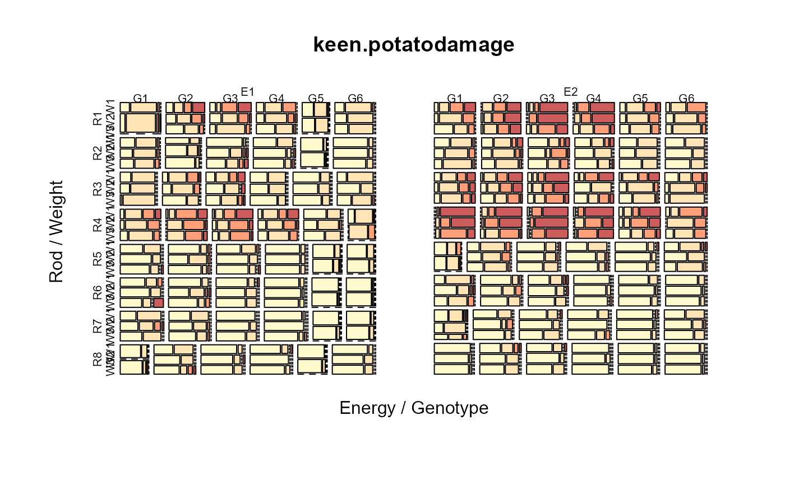

keen.potatodamage.RdDamage to potato tubers from lifting rods.
data("keen.potatodamage")
A data frame with 1152 observations on the following 6 variables.
energyenergy factor
weightweight class
gengenotype/variety factor
rodrod factor
damagedamage category
countcount of tubers in each combination of categories
Experiments performed at Wageningen, Netherlands.
Potatoes can be damaged by the lifter. In this experiment, eight types of lifting rod were compared. Two energy levels, six genotypes/varieties and three weight classes were used. Most combinations of treatments involved about 20 potato tubers. Tubers were rated as undamaged (D1) to severely damaged (D4).
The main interest is in differences between rods, and not in interactions. The other factors (besides rod) were introduced to create variety in experimental conditions and are not of interest.
Keen and Engle estimated the following rod effects.
# Rod: 1 2 3 4 5 6 7 8
# Effect: 0 -1.26 -0.42 0.55 -1.50 -1.85 -1.76 -2.09
Used with permission of Bas Engel.
A. Keen and B. Engel. Analysis of a mixed model for ordinal data by iterative re-weighted REML. Statistica Neerlandica, 51, 129--144. Table 2. https://doi.org/10.1111/1467-9574.00044
# \dontrun{ library(agridat) data(keen.potatodamage) dat <- keen.potatodamage # Energy E1, Rod R4, Weight W1 have higher proportions of severe damage # Rod 8 has the least damage d2 <- xtabs(count~energy+rod+gen+weight+damage, data=dat) mosaicplot(d2, color=c("lemonchiffon1","moccasin","lightsalmon1","indianred"), xlab="Energy / Genotype", ylab="Rod / Weight", main="keen.potatodamage")#> #>#> #> #>#> #> #>#> #> #>#> #> #># Note, the clmm2 function can have only 1 random term. Results are # similar to Keen & Engle, but necessarily different (they had multiple # random terms). m1 <- clmm2(damage ~ rod + energy + gen + weight, data=dat, weights=count, random=rod:energy, link='probit')#> Warning: clmm2 may not have converged: #> optimizer 'ucminf' terminated with max|gradient|: 6.24989053934658e-05#> rodR2 rodR3 rodR4 rodR5 rodR6 rodR7 rodR8 #> -1.19 -0.41 0.50 -1.46 -1.73 -1.67 -1.99## rodR2 rodR3 rodR4 rodR5 rodR6 rodR7 rodR8 ## -1.19 -0.41 0.50 -1.46 -1.73 -1.67 -1.99 # Alternative # m2 <- clmm(damage ~ rod + energy + gen + weight + # (1|rod:energy), data=dat, weights=count, link='probit') # }